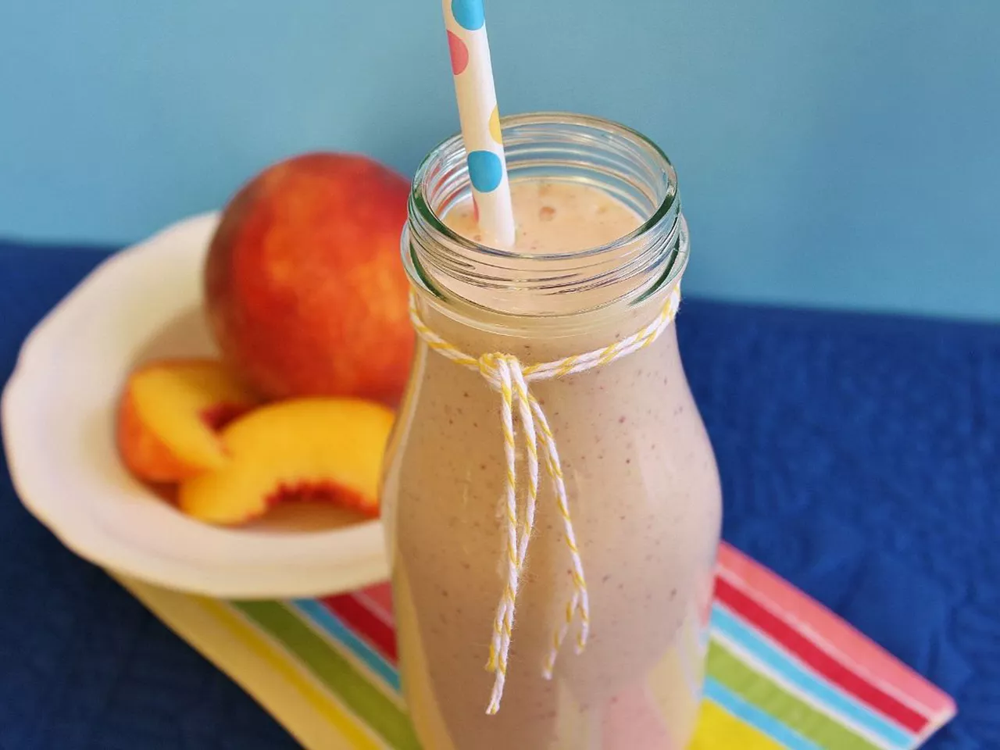

Vanilla-Peach Smoothie

How to Make Delicious Smoothies
Nothing beats a quick breakfast on the go like a fruit smoothie. There are a ton of fruits and flavors you can use to keep your taste buds from getting bored. And the best part? Smoothies are so nutritious! If you master this recipe, you can say goodbye to the days of skipping breakfast.
Ingredients
- 2 cups yogurt
- 1/2 cup orange juice or more
- 1/2 tsp vanilla extract
- 1/2 frozen banana, optional
- 2 cups unsweetened chopped or sliced peaches
Steps
- Put yogurt, juice, vanilla, and the banana in the blender first, followed by the peaches.
- Blend until smooth.
- Serve right away, preferably in chilled glasses.